Из степени — в набор точек
Представим ar как число точек с координатами (x1, …, xr). Каждая координата принимает одно из a значений: от 1 до a. На главной диагонали находятся точки (1, …, 1), …, (a, …, a); их ровно a. Поэтому ar − a — число точек вне диагонали.
Зачем раскрашивать эти точки? Мы хотим собрать их в циклы по r точек: тогда делимость на r будет видна непосредственно. Для этого переставляем координаты по кругу:
Повторяем сдвиг до возврата к исходной точке. Полученные точки составляют один цикл и отмечены на схемах одним цветом.
Квадрат: пары по две точки
В квадрате сдвиг меняет координаты местами: (x, y) ↔ (y, x). Если x ≠ y, получаем пару. Диагональная точка (x, x) остаётся на месте.
Например, при a = 7 из 49 точек 7 лежат на диагонали, а 42 остальные образуют 21 пару. На рисунке эти же точки видны как два симметричных ступенчатых треугольника по 21 точке.
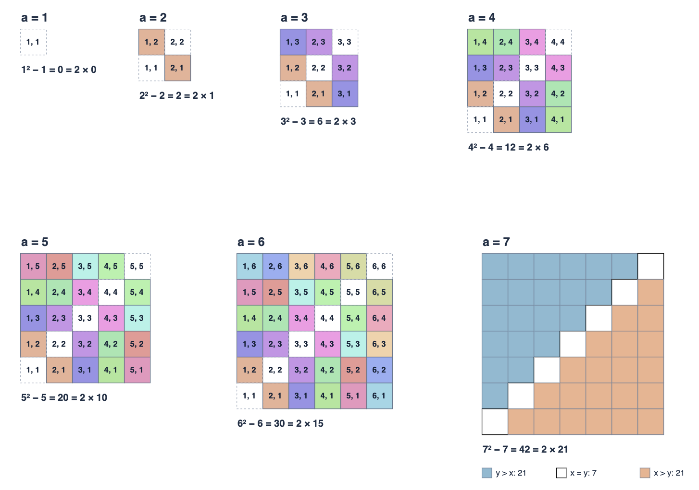
Куб: циклы по три точки
Теперь сдвиг выглядит так: (x, y, z) → (y, z, x) → (z, x, y). Если точка не диагональная, это три разные точки. При a = 2 вне диагонали остаётся 23 − 2 = 6 точек — два цикла. При a = 3 их 33 − 3 = 24 — восемь циклов.
Куб показан сдвинутыми квадратными слоями. Координаты внутри каждой клетки позволяют проследить один цвет через все три положения.
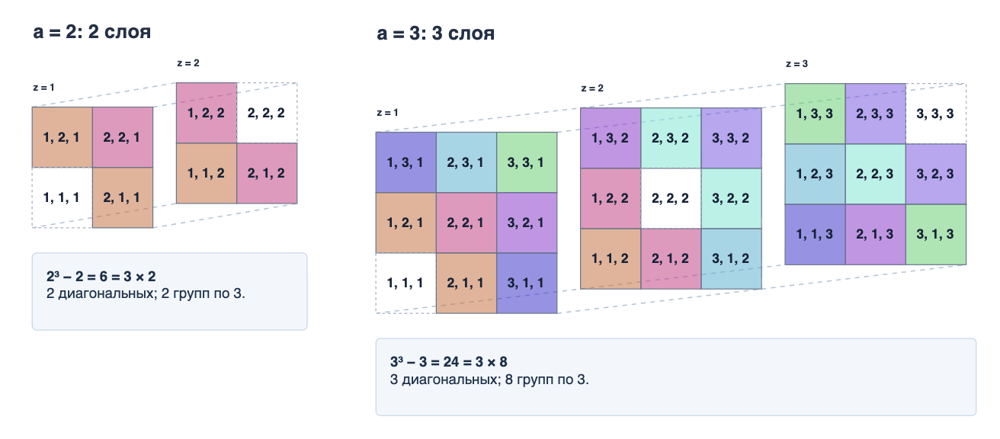
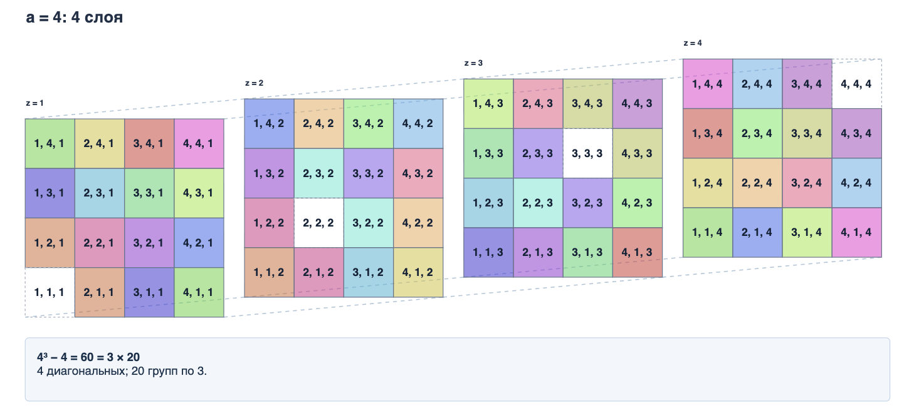
Четыре измерения: короткий цикл
В четырёх измерениях сдвиг может вернуть недиагональную точку уже после двух шагов: (1, 2, 1, 2) ↔ (2, 1, 2, 1). Такой цикл содержит две точки, а не четыре.
При a = 2 всего 24 − 2 = 14 недиагональных точек. Двенадцать составляют три цикла по четыре, ещё две — короткий цикл. Поэтому 4 ∤ 14. Составная размерность допускает короткие циклы, и прежний аргумент уже не гарантирует делимость.
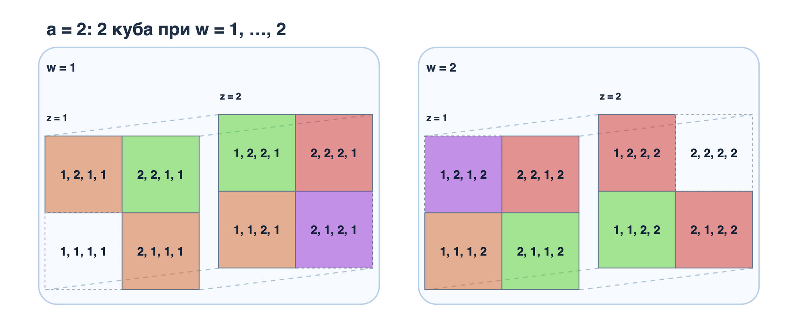
Показать все слои 4D при a = 3
Для a = 3 получаем 34 − 3 = 78 недиагональных точек: 72 точки в восемнадцати циклах по четыре и 6 точек в трёх циклах по две.
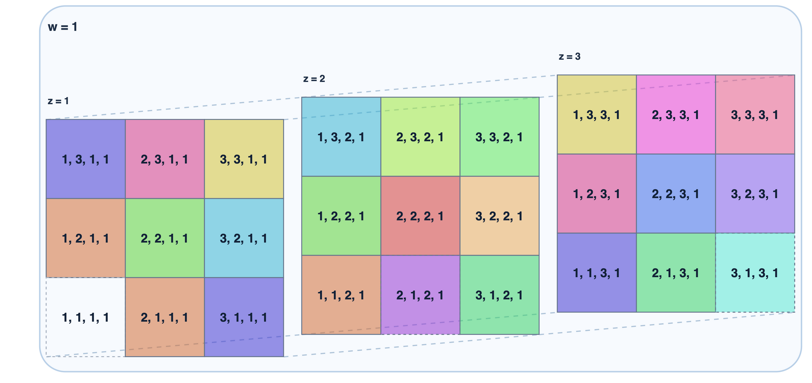
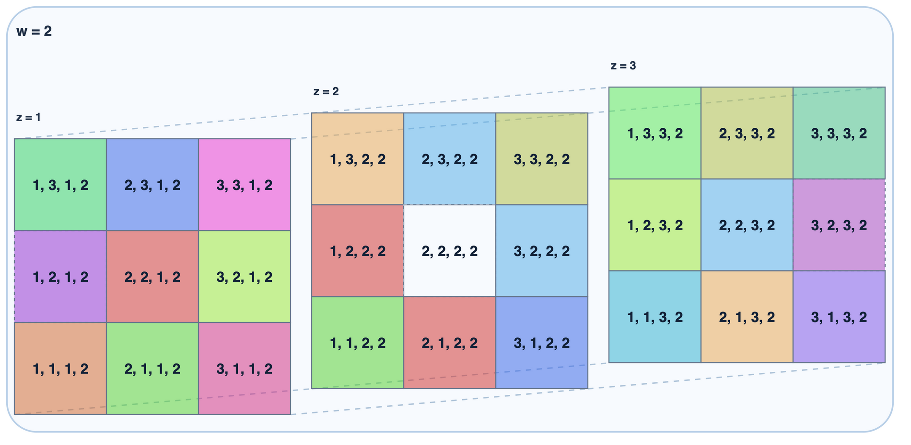
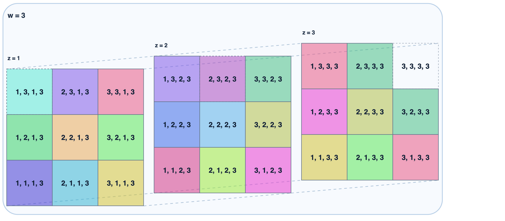
Пять измерений: полные циклы
При пяти координатах недиагональная точка возвращается к себе только после пяти сдвигов. При a = 2 вне диагонали 25 − 2 = 30 точек, то есть шесть циклов по пять. При a = 3 их 35 − 3 = 240, или 48 циклов по пять.
Пятимерную сетку мы раскладываем на блоки по пятой координате, а каждый блок — на срезы по остальным координатам. Цвет помогает найти части одного цикла в разных местах большой схемы.
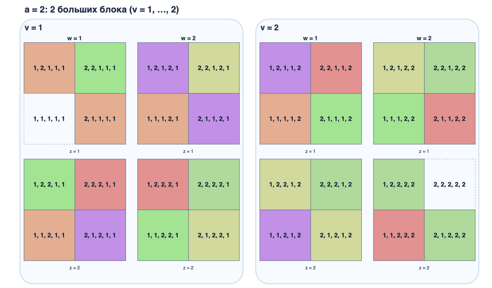
Показать все слои 5D при a = 3
Большая схема содержит 243 точки, из которых три диагональные. Остальные 240 разбиваются на 48 циклов по пять.
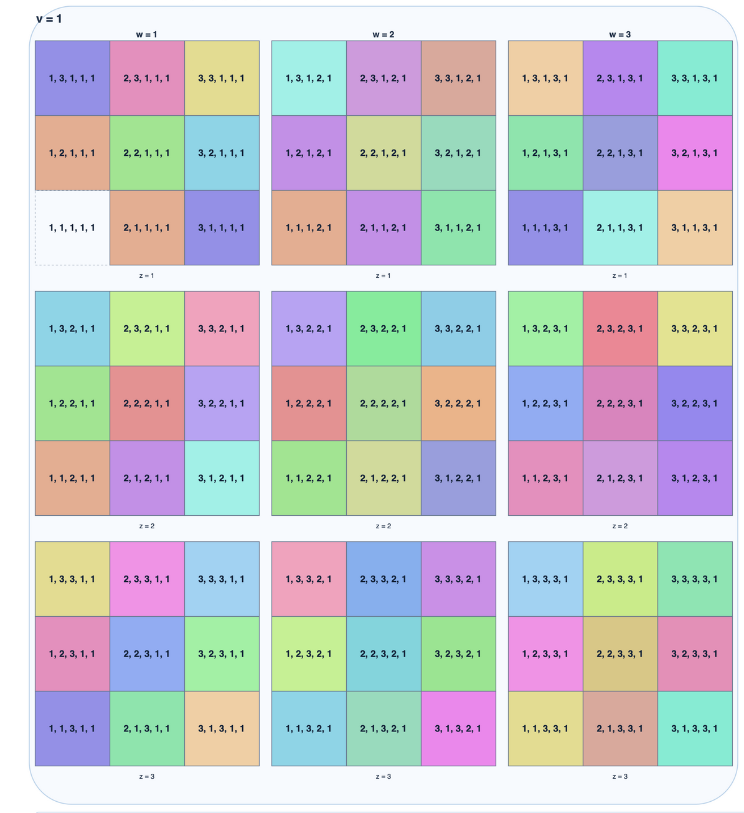
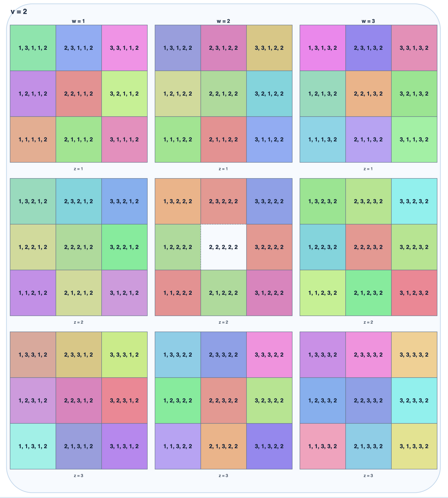
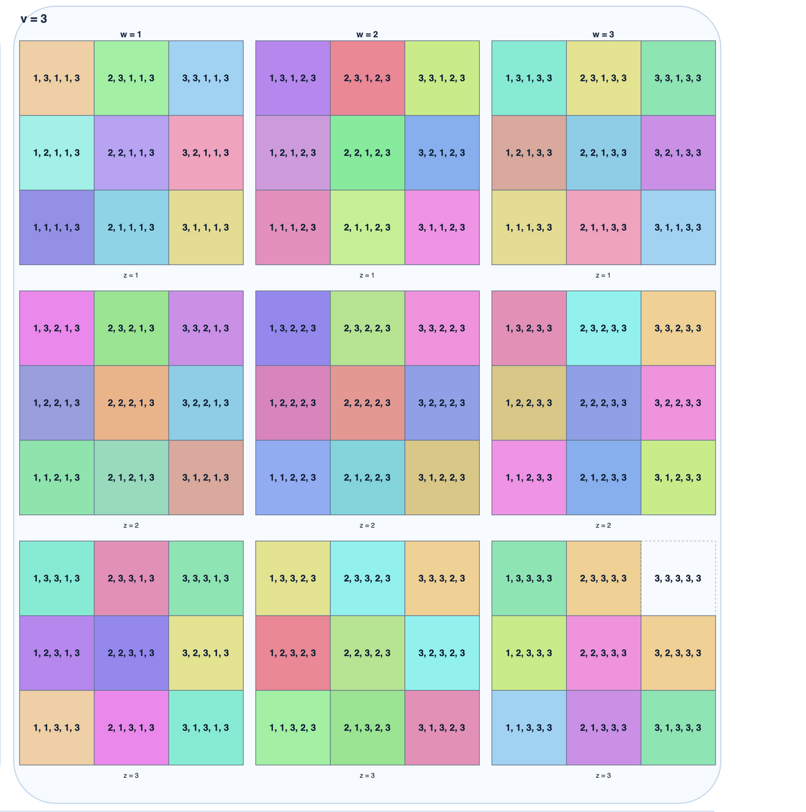
Почему простого числа достаточно
Пусть теперь число координат p простое. После p циклических сдвигов любая точка вернётся на прежнее место. Число сдвигов до первого возврата делит p, а значит, равно либо 1, либо p.
Возврат за один сдвиг возможен только у диагональных точек (x, …, x). Все остальные входят в циклы ровно по p точек. Мы посчитали их двумя способами: как ap − a точек и как целое число полных циклов по p. Следовательно, p ∣ (ap − a).
Где на рисунке биномиальные коэффициенты
Увеличим сторону сетки с a до a + 1. Среди новых точек одна диагональная: (a + 1, …, a + 1). У остальных новых точек пусть ровно k координат сохранили старые значения от 1 до a, где 1 ≤ k ≤ p − 1.
Выбрать места для этих k координат можно C(p, k) способами. Задать их значения — ak способами. Поэтому точек такого типа ровно C(p, k)ak. Это и есть члены биномиального разложения.
Сдвиг координат не меняет k. При простом p все смешанные точки этого типа образуют циклы по p. Более того, если смотреть только на расположение старых и новых координат, каждый смешанный шаблон тоже входит в цикл из p шаблонов. Так видно, почему внутренние биномиальные коэффициенты C(p, k) кратны p.
При r = 4 картина иная: C(4, 2) = 6. Среди шести шаблонов с двумя старыми координатами есть чередующаяся пара, возвращающаяся через два сдвига. Именно такой короткий цикл мы видели на рисунке.
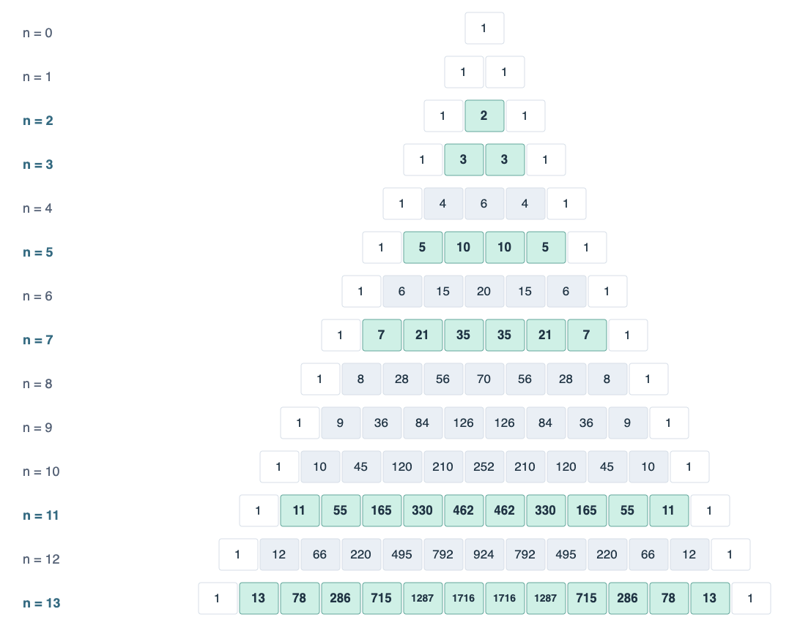
Доказательство по индукции
Обозначим F(a) = ap − a. Начало: F(1) = 0. Для простого p и 1 ≤ k ≤ p − 1 число C(p, k) делится на p. Действительно, в равенстве k!(p − k)!C(p, k) = p! справа есть множитель p, а в произведении k!(p − k)! его нет.
По формуле для нового слоя F(a + 1) − F(a) — сумма слагаемых, каждое из которых кратно p. Значит, из делимости F(a) следует делимость F(a + 1). По индукции p ∣ (ap − a) для любого натурального a.
Об этой визуализации
Статья предлагает послойный способ проследить известное комбинаторное доказательство по отдельным точкам и связать их циклы с биномиальными коэффициентами. Близкое геометрическое разбиение гиперкуба исследует Aubrey Jaffer в работе Packing Pyramids. Здесь акцент сделан на координатах, цветных циклах и переходе от рисунков к формуле.